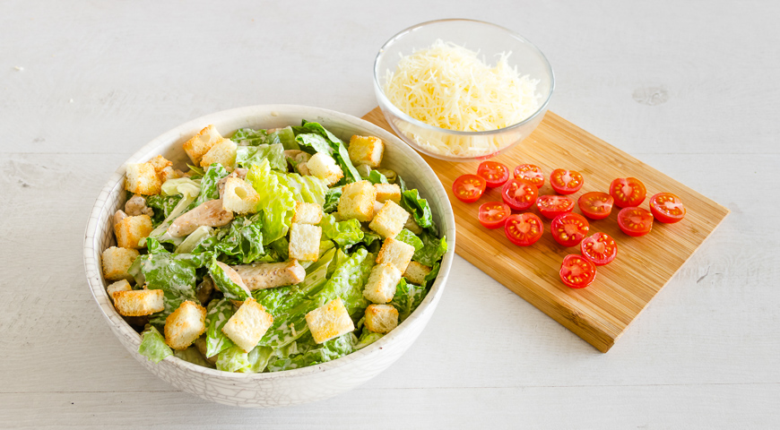

Подготовить ингредиенты салата. Куриное филе промыть, нарезать небольшими брусочками,
посолить, поперчить и обжарить на оливковом масле, понемногу добавляя белое вино.

Для соуса салата перемешать все ингредиенты в блендере.
Обратите внимание: рецепт соуса дан на 10 порций.
На 2 порции салата требуется 6 ст. л. соуса. Готовый соус можно хранить
в холодильнике около недели при температуре 4С.

Листья салата промыть проточной водой, затем тщательно обсушить бумажными полотенцами.
Порвать на небольшие кусочки и заправить приготовленным ранее соусом.

Добавить кусочки курицы и перемешать. Выложить на тарелку или в салатник.
Помидоры вымыть и разрезать на половинки. Выложить на салат вместе с гренками и сыром.
